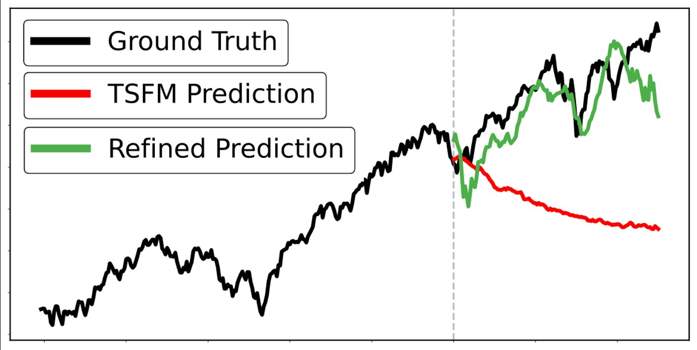
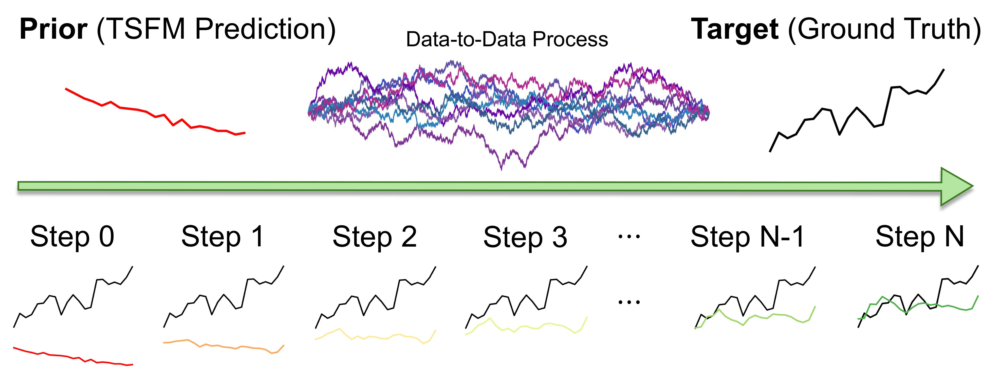
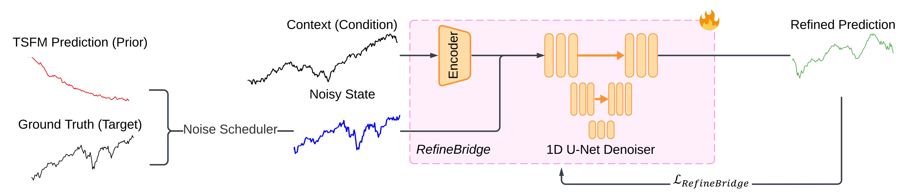

Start with a prior
A frozen time series foundation model predicts the future from a historical context window.
ICASSP 2026 · Oral presentation
RefineBridge: Generative Bridge Models Improve
Financial Forecasting by Foundation Models
Keep the foundation model frozen. Learn to refine its predictions.
A Schrödinger Bridge turns a coarse forecast into a more accurate one.
¹ Imperial College London ² Tsinghua University
* Equal contribution † Corresponding author

best MSE / MAE results
trainable bridge parameters
lower MSE · Chronos, S&P 500, H=126
foundation-model weights updated
Financial time series challenge general-purpose forecasting models: regimes shift, distributions have heavy tails, and noise obscures the signal.
Fine-tuning with LoRA retains the base model’s architecture and training objective. In the paper’s benchmark, it degrades the original forecast in 29 of 45 configurations.
But a weak forecast is still an informative starting point. RefineBridge learns a context-conditioned transport from this prior toward the data distribution, using a separate denoising objective.

A frozen time series foundation model predicts the future from a historical context window.
A DLinear context encoder and 1D U-Net learn conditional denoising between paired forecasts and ground truth.
At inference, iterative ODE or SDE sampling refines the forecast using its prior and historical context.

Only the context encoder and denoiser receive gradients. The foundation model stays frozen.
For 5- and 10-day forecasts, the paper finds 1–10 denoising steps usually work best.
For 21-, 63-, and 126-day forecasts, temperature-tuned stochastic sampling uses 10–1,000 steps.
Five prediction horizons, evaluated with MSE and MAE. The values below are from Table 1, averaged over five independent runs. Lower is better.
Prediction horizon in trading days · bars share a common scale
| Horizon | Original | LoRA | RefineBridge | Reduction vs. original |
|---|
| Asset | H | Chronoslarge | Moirailarge | Time-MoEbase | |||||||||||||||
|---|---|---|---|---|---|---|---|---|---|---|---|---|---|---|---|---|---|---|---|
| Original | LoRA | RefineBridge | Original | LoRA | RefineBridge | Original | LoRA | RefineBridge | |||||||||||
| MSE | MAE | MSE | MAE | MSE | MAE | MSE | MAE | MSE | MAE | MSE | MAE | MSE | MAE | MSE | MAE | MSE | MAE | ||
| S&P 500 | 5 | 0.009 | 0.075 | 0.011 | 0.078 | 0.008 | 0.067 | 0.016 | 0.095 | 0.023 | 0.110 | 0.008 | 0.069 | 0.012 | 0.088 | 0.011 | 0.079 | 0.009 | 0.073 |
| 10 | 0.016 | 0.101 | 0.017 | 0.099 | 0.014 | 0.092 | 0.021 | 0.111 | 0.026 | 0.122 | 0.017 | 0.098 | 0.022 | 0.121 | 0.017 | 0.103 | 0.018 | 0.105 | |
| 21 | 0.157 | 0.324 | 1.894 | 1.339 | 0.105 | 0.260 | 0.115 | 0.267 | 0.898 | 0.329 | 0.103 | 0.251 | 0.357 | 0.491 | 1.330 | 1.098 | 0.279 | 0.426 | |
| 63 | 1.164 | 0.894 | 3.308 | 1.025 | 0.567 | 0.601 | 0.388 | 0.487 | 3.972 | 1.906 | 0.297 | 0.427 | 2.542 | 1.391 | 2.293 | 1.389 | 1.328 | 1.007 | |
| 126 | 5.536 | 2.026 | 6.493 | 2.457 | 2.102 | 1.207 | 1.566 | 0.996 | 5.550 | 2.188 | 0.764 | 0.691 | 9.257 | 2.761 | 2.511 | 1.326 | 3.338 | 1.603 | |
| WTI | 5 | 0.175 | 0.319 | 0.252 | 0.373 | 0.146 | 0.293 | 0.351 | 0.447 | 0.291 | 0.412 | 0.178 | 0.321 | 0.198 | 0.343 | 0.202 | 0.341 | 0.146 | 0.295 |
| 10 | 0.278 | 0.410 | 0.445 | 0.497 | 0.232 | 0.373 | 0.554 | 0.574 | 0.458 | 0.522 | 0.280 | 0.408 | 0.313 | 0.438 | 0.319 | 0.441 | 0.237 | 0.378 | |
| 21 | 0.407 | 0.503 | 0.586 | 0.627 | 0.335 | 0.469 | 0.409 | 0.502 | 1.338 | 0.965 | 0.325 | 0.458 | 0.370 | 0.478 | 0.395 | 0.501 | 0.316 | 0.457 | |
| 63 | 0.907 | 0.771 | 0.819 | 0.715 | 0.774 | 0.721 | 1.338 | 0.943 | 3.319 | 1.505 | 0.891 | 0.769 | 2.092 | 1.223 | 1.897 | 1.134 | 0.928 | 0.798 | |
| 126 | 1.100 | 0.844 | 1.176 | 0.876 | 0.844 | 0.742 | 1.813 | 1.047 | 2.174 | 1.190 | 1.072 | 0.863 | 4.010 | 1.523 | 3.630 | 1.569 | 1.160 | 0.904 | |
| EUR/USD | 5 | 0.295 | 0.418 | 0.315 | 0.432 | 0.333 | 0.443 | 0.627 | 0.629 | 0.596 | 0.619 | 0.327 | 0.447 | 0.419 | 0.500 | 0.372 | 0.476 | 0.339 | 0.453 |
| 10 | 0.555 | 0.584 | 0.631 | 0.593 | 0.509 | 0.557 | 1.093 | 0.845 | 0.917 | 0.779 | 0.567 | 0.599 | 0.786 | 0.696 | 0.756 | 0.685 | 0.566 | 0.597 | |
| 21 | 1.017 | 0.802 | 1.347 | 0.896 | 0.888 | 0.756 | 1.052 | 0.801 | 1.733 | 1.030 | 0.897 | 0.748 | 1.224 | 0.891 | 1.018 | 0.773 | 1.043 | 0.806 | |
| 63 | 3.381 | 1.404 | 8.423 | 2.119 | 1.596 | 0.966 | 3.263 | 1.298 | 4.872 | 1.714 | 1.730 | 1.008 | 4.626 | 1.614 | 4.683 | 1.801 | 1.951 | 1.047 | |
| 126 | 3.328 | 1.384 | 4.833 | 1.736 | 1.702 | 1.004 | 2.621 | 1.267 | 6.181 | 2.066 | 1.272 | 0.852 | 2.956 | 1.284 | 6.405 | 2.067 | 1.458 | 0.953 | |
| 1st count | 2 | 1 | 27 | 0 | 0 | 30 | 0 | 6 | 24 | ||||||||||
20 years of daily data
January 2005 – January 2025
Temporal 80 / 10 / 10 split
Train / validation / test
21 days for H = 5, 10
252 days for H = 21, 63, 126
The gains are not universal. For example, the original Chronos model performs better on EUR/USD at H=5, and LoRA performs better for Time-MoE on S&P 500 at H=126. The explorer includes these cases.
Selected S&P 500 forecasts from the oral presentation. Click any figure to inspect the original.


The current encoder fixes the forecast horizon at training time. Arbitrary horizons need retraining or a horizon-conditioned architecture.
A separate bridge is trained for each asset. Zero-shot refinement on unseen assets remains future work.
Long-horizon SDE sampling can take up to 1,000 steps. Faster samplers and distillation are natural next directions.
@article{bolton2025refinebridge,
title={RefineBridge: Generative Bridge Models Improve
Financial Forecasting by Foundation Models},
author={Bolton, Anthony and Zhou, Wuyang and Chen, Zehua
and Iacovides, Giorgos and Mandic, Danilo},
journal={arXiv preprint arXiv:2512.21572},
year={2025}
}Preprint citation · Presented at ICASSP 2026 (Oral).